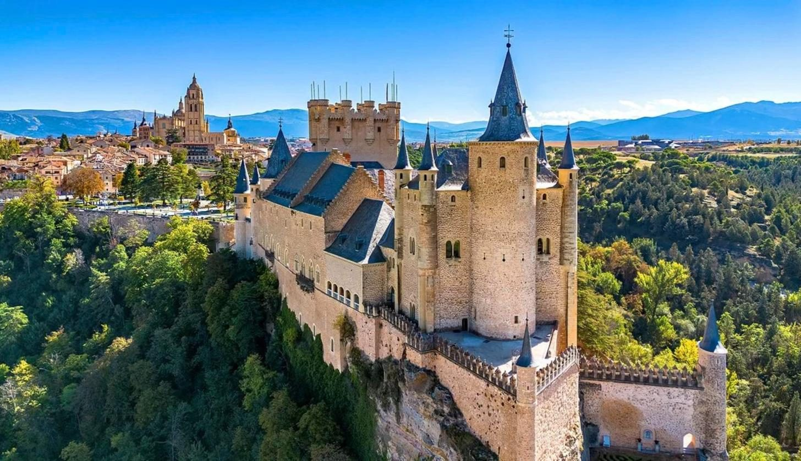
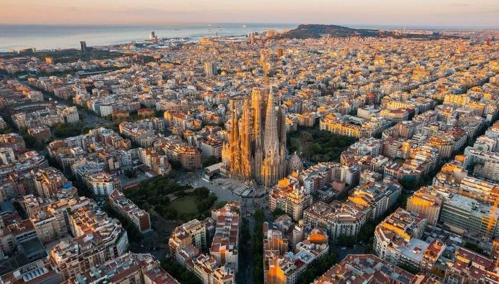
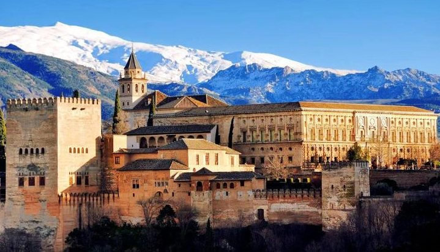
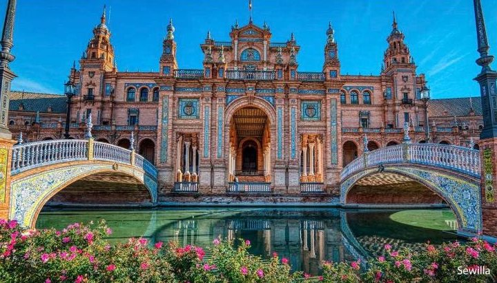
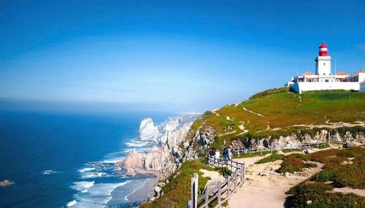
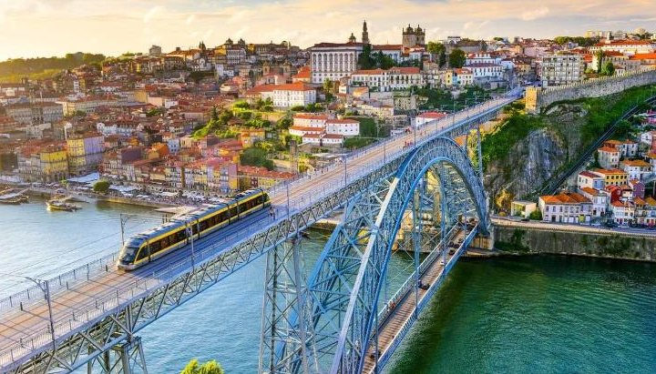
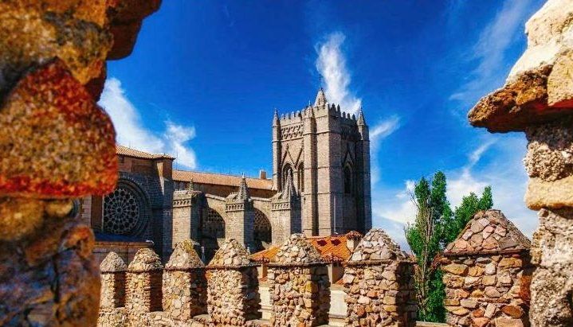
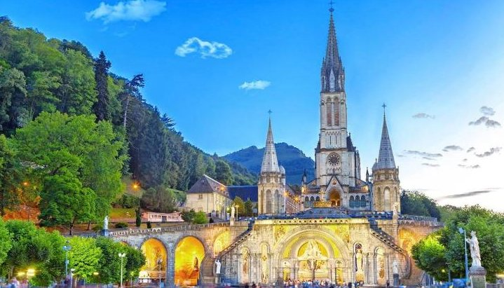
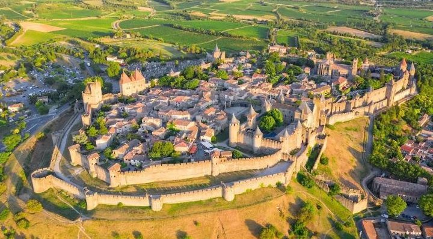

dzień1
Przylot do Barcelony
📍 Warszawa → Barcelona
Zbiórka na lotnisku w Warszawie i lot do Barcelony. Transfer do hotelu, czas wolny (zależnie od godziny przylotu), kolacja i nocleg.

Wielka pętla: Hiszpania, Portugalia i francuskie Lourdes
Dotknij mapy, żeby ją powiększyć.
Kolejność zwiedzania może się nieco zmienić — o szczegółach decyduje pilot na miejscu.
📍 Warszawa → Barcelona
Zbiórka na lotnisku w Warszawie i lot do Barcelony. Transfer do hotelu, czas wolny (zależnie od godziny przylotu), kolacja i nocleg.

📍 Barcelona
Przejście pod słynną świątynią Sagrada Família i spacer elegancką ulicą Passeig de Gràcia z kamienicami Gaudíego (Casa Milà, Casa Batlló). W czasie wolnym: katedra, deptak La Rambla z halą targową La Boqueria i stare kościoły Dzielnicy Gotyckiej.
🚌 ok. 350 km — wieczorem przejazd w stronę Walencji

📍 Walencja → okolice Granady
Spacer po starówce Walencji: katedra, jeden z największych targów w Europie, dawna Giełda Jedwabiu. Potem futurystyczne Miasteczko Sztuki i Nauki. Po południu piękna trasa z widokiem na najwyższe góry Hiszpanii.
🚌 ok. 480 km

📍 Granada · Kordoba
Rano Alhambra w Granadzie — wspaniały pałac arabskich władców — i ogrody Generalife. Po południu Kordoba i jej Mezquita, ogromny dawny meczet, w środku którego zbudowano katedrę.
🚌 ok. 350 km

📍 Sewilla
Kręte uliczki dawnej dzielnicy żydowskiej Santa Cruz, ogromna gotycka katedra (albo Kościół Zbawiciela), pałac Dom Piłata z ogrodami, Plac Hiszpański i Plac Ameryki.
🚌 ok. 480 km — wieczorem przejazd w stronę Portugalii

📍 Cabo da Roca · Lizbona · Fatima
Przylądek Cabo da Roca — najdalej na zachód wysunięty punkt Europy, z latarnią na 140-metrowym klifie. Lizbona: dzielnica Belém z wieżą, Pomnikiem Odkrywców i klasztorem Hieronimitów, potem centrum miasta. Wieczorem Fatima — możliwość udziału w nabożeństwie.
🚌 ok. 220 km

📍 Porto (Portugalia) → Salamanka (Hiszpania)
Bardzo wczesny wyjazd, śniadanie na wynos. Porto: wąskie uliczki starego miasta, katedra z widokiem na rzekę i dworzec wyłożony niebieskimi kafelkami. Po południu Salamanka — złote kamienice, najpiękniejszy rynek Hiszpanii (Plaza Mayor), stary uniwersytet i dwie katedry.
🚌 ok. 550 km — jeden z najdłuższych dni

📍 Ávila · Madryt
Ávila — miasto otoczone średniowiecznymi murami, z katedrą i romańską bazyliką. Potem Madryt: Plaza Mayor, Plac Hiszpański z pomnikiem Cervantesa, pałac królewski i arena Las Ventas. Czas na muzeum Prado albo spacer po parku Retiro.
🚌 ok. 220 km

📍 Segowia · Burgos
Segowia słynie z ogromnego rzymskiego akweduktu nad centrum miasta, katedry i zamku Alkazar (jak na zdjęciu na górze strony). Potem Burgos i jego gotycka katedra, jedna z najpiękniejszych w Hiszpanii.
🚌 ok. 300 km

📍 San Sebastián (Hiszpania) → Lourdes (Francja)
San Sebastián — elegancki kurort nad zatoką La Concha, spacer po starówce i czas na baskijskie przekąski. Potem przejazd do francuskiego Lourdes. Wieczorem można wziąć udział w procesji ze świecami.
🚌 ok. 420 km

📍 Lourdes → Carcassonne → okolice Barcelony
Krótki spacer po Lourdes i wyjazd w stronę Barcelony. Po drodze Carcassonne — miasto-twierdza, w którym czas zatrzymał się w średniowieczu.
🚌 ok. 580 km
📍 Barcelona → Warszawa
Śniadanie, czas wolny (zależnie od godziny lotu) i transfer na lotnisko. Lot do Warszawy.
Wylot z Warszawy w niedzielę, powrót w czwartek po 12 dniach. Cena jest za jedną osobę, gdy w pokoju są 2 osoby. Biuro dolicza jeszcze 30 zł na fundusze gwarancyjne.
| Cena wycieczki (najtańszy termin) | 5 979 zł |
| Fundusze gwarancyjne (TFG i TFP) | 30 zł |
| Opłata na miejscu: bilety, przewodnicy, słuchawki | 270 € ≈ 1 148 zł |
| Taksa klimatyczna w Katalonii i Francji | 10 € ≈ 42 zł |
Euro przeliczone orientacyjnie po ok. 4,25 zł. Bez dojazdu do Warszawy, napojów i pamiątek. Dla 2 osób: ok. 14 400 zł.